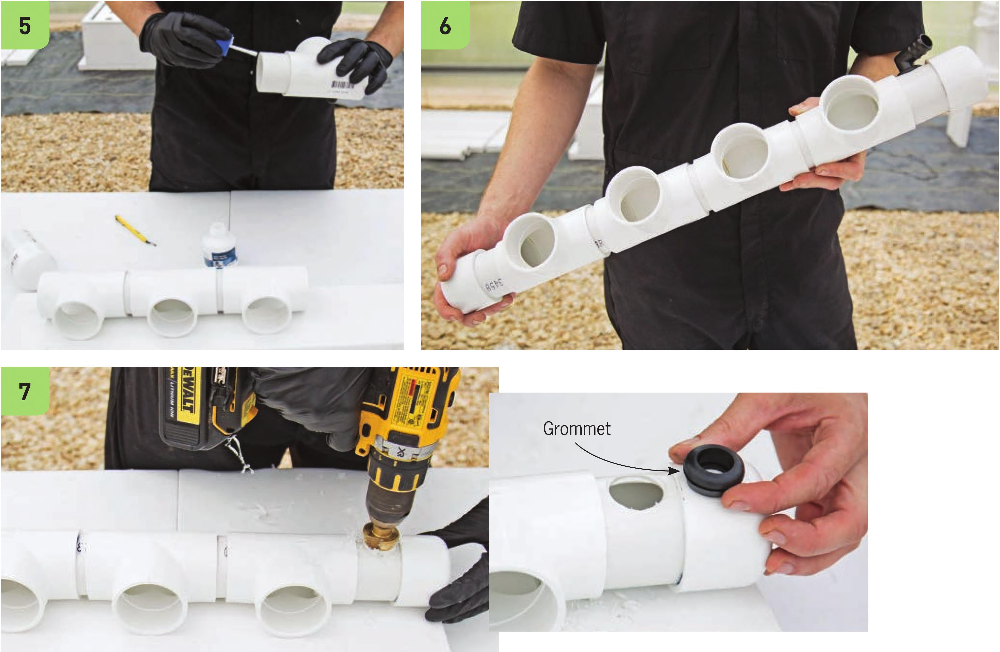

Assemble the Manifold The manifold will collect the drainage from the N FT channels. Before gluing any of the components together, check that the total length of the manifold is less than 21 Vi inches. If it is longer, the 3-inch PVC segment can be trimmed down to 214 inches. The center of the tees should be 5 inches apart. Channels can be spaced closer on further than 5 inches apart, but this spacing works great for lettuce and basil. The end of the manifold with the 4- inch PVC segment will be used for a 3A-inch drainage line. A 3A-inch elbow will be inserted into the PVC and another3/4-inch elbow will direct the flowto the reservoir. Check that there is enough space to fit elbows before gluing. Some PVC tees and caps are longer or shorter than others, so there may be some adjustments specific to your materials. Only proceed once the manifold assembled without glue is less than 27V2 inches long, the tees have 5-inch spacing at their centers, and there is sufficient space on the 4-inch PVC segment to fit the 3A-inch elbows. 5 The four 2" PVC tees are connected by the 2VC PVC segments. Glue the tees so they all lay flat on a surface. 6 One end cap connects to the tees using the 4" PVC segment and the other cap connects using the 3" PVC segment. 74 DIY HYDROPONIC GARDENS
